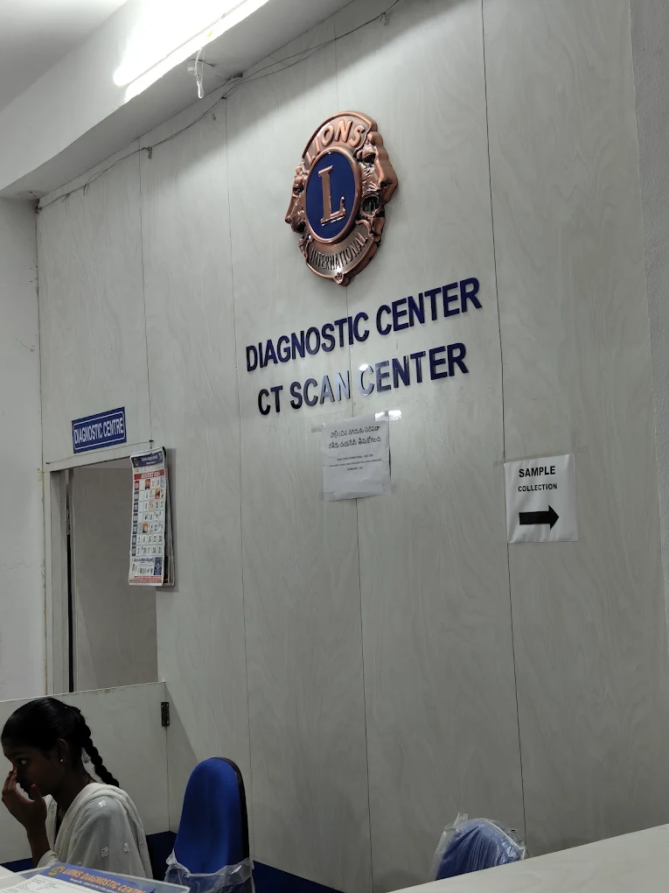

CT imaging and a full pathology laboratory under one roof at Ashok Nagar, Karimnagar — 69 investigations in all, every one of them at a subsidised charge.
Computed tomography gives your doctor a cross-sectional view of the body that a plain X-ray cannot. We carry out routine and specialised CT studies, including three-dimensional reconstruction and contrast-enhanced work.
CT Brain and CT PNS are charged at ₹800; most other regions at ₹2,000. Contrast, where the study requires it, is charged separately.
All CT charges →
Before you come for a CT scan: bring your doctor's prescription or referral note and any earlier scans or reports you have. Tell the counter if you are, or might be, pregnant, if you have a known allergy to contrast dye, or if you have a kidney condition — these change how a study is done. If contrast has been advised, ask us what fasting is required when you call.
Routine and specialised blood and urine investigations, from a ₹10 blood sugar to a full autoimmune profile.
Complete blood picture, ESR, blood group, clotting and bleeding time, routine urine examination and urine for ketones.
From ₹20.
Blood sugars (FBS, PLBS, RBS), HbA1c, liver function, kidney profile, lipid profile, electrolytes, calcium, uric acid, thyroid profile, cardiac troponins, PT INR and APTT.
From ₹10.
FSH, LH, Prolactin, Testosterone, AMH, Free Thyroid, Vitamin D3 and Vitamin B12.
₹200 – ₹850.
Dengue, Malaria parasite, Widal, HIV, HBsAg, HCV, VDRL, CRP, ASO, RA Factor, urine culture, D-Dimer, AEC and the urine pregnancy test.
From ₹20.
ANA Profile (₹1,800), Anti CCP (₹900), HLA B27 (₹850), Iron Profile (₹850), PSA (₹550), IgE (₹550), Serum Amylase and Serum Lipase (₹200 each).
Samples are collected at the sample collection point beside the reception, signposted inside the centre. Register at the counter first; the staff there will tell you where to go and when your report will be ready.
Call us and read out what has been advised. We will tell you what each test costs here and what you need to do before you come.